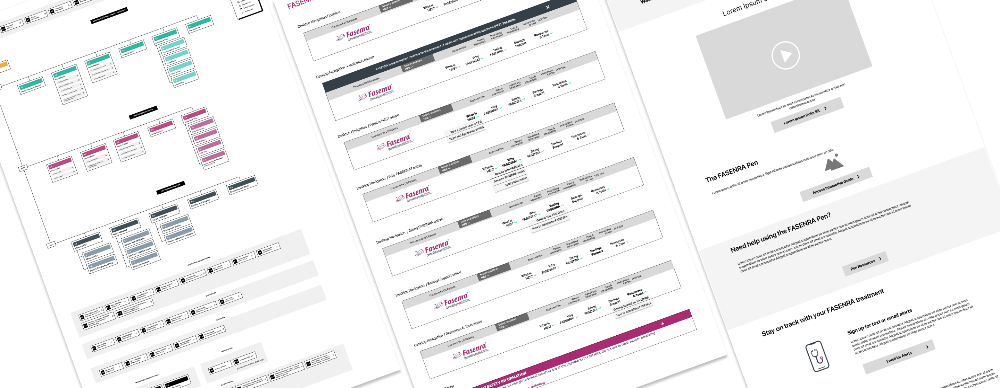
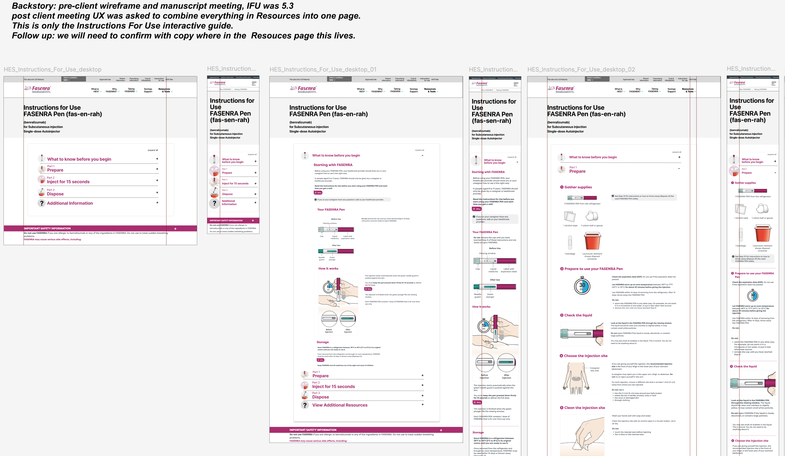

Information architecture optimization for a multi-indication pharmaceutical website, focused on simplifying self-injection instructions for patients managing chronic conditions.
Fasenra is a biologic medication used to treat severe eosinophilic asthma, EGPA, and hypereosinophilic syndrome (HES). The existing patient website served multiple indications through a shared navigation system, but the HES experience inherited legacy patterns that created friction for patients seeking critical self-care information.
The primary challenge was the Instructions for Use (IFU) experience. Patients learning to self-administer injections were navigating a fragmented flow spread across multiple HTML pages, with each step requiring a full page load. For users already managing a complex health condition, this added unnecessary cognitive load to an already stressful task.
UX Architect Lead, responsible for synthesizing existing audit findings into actionable recommendations, defining information architecture improvements, and presenting the case for change to senior stakeholders. I collaborated with brand UX researchers and accessibility specialists throughout the approval process.
The AstraZeneca team had already conducted comprehensive heuristic and accessibility audits of the existing site. My task was to synthesize these findings into prioritized recommendations focused on critical-path improvements. The audits revealed consistent patterns: users were losing context during multi-page IFU flows, accessibility issues compounded navigation friction, and the anchor-link patterns used elsewhere on the site weren't serving the HES audience effectively.
Through expert review against industry standards and competitive analysis of similar pharmaceutical patient portals, I built an evidence-based case for architectural changes. The goal was to reduce friction at critical decision points without requiring a full site rebuild.

"This is a great solution. We appreciate the thinking and hard work."
- Senior Brand Client
1. Accordion-based IFU over multi-page flow:
The existing IFU spread injection instructions across multiple HTML pages, each requiring a full page load. I replaced this with an accordion component that keeps users oriented within a single view. Each section includes contextual illustrations and expands only the content relevant to the user's current task. The tradeoff was increased initial page weight, but testing confirmed users preferred the single-page experience.
2. Single-page HES experience over anchor links:
The broader Fasenra site used anchor-link patterns for navigation between indication-specific content. For HES, I advocated for a dedicated single-page approach. This reduced navigation complexity and allowed patients to scan the full scope of information without disorientation. The pattern proved particularly valuable for users who needed to reference multiple sections during a single session.
3. Progressive disclosure over comprehensive views:
Rather than presenting all injection steps simultaneously, the accordion reveals content progressively as users advance through the process. This reduces cognitive load while ensuring patients can easily backtrack if needed. Each expanded section maintains visual hierarchy through consistent typography and illustration placement.
The redesigned HES experience shipped within a single quarter from research synthesis to production. The IFU accordion pattern I designed was adopted into AstraZeneca's global component library for use across future product sites. Client stakeholders, brand UX researchers, and accessibility specialists all signed off on the recommendations.
This project reinforced that impactful UX work doesn't always require original research. Sometimes the most valuable contribution is synthesizing existing findings into a clear case for change and navigating the stakeholder landscape to get improvements approved. The IFU pattern's adoption into the global component library extended the project's impact well beyond the original scope.
AstraZeneca
Information Architecture
Content Strategy
Interaction Design
Product Design
UX Architect Lead
Product Designer
2025
IA Recommendations
Lightweight prototyping
Wireframes
Component Specifications